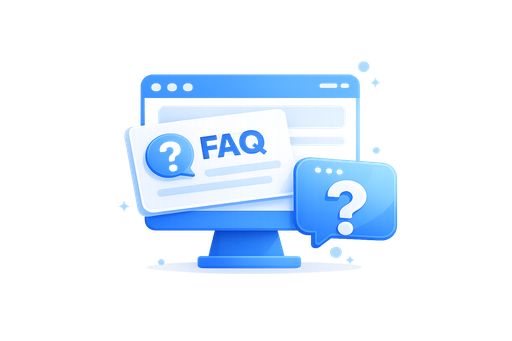

Temukan jawaban mengenai biaya pembuatan aplikasi,
website, ERP, CRM, proses pengembangan, hingga
layanan maintenance yang sering ditanyakan oleh klien.

Ya. Kami sering membantu klien yang ingin melanjutkan proyek dari vendor sebelumnya. Tim Kamilab
akan melakukan audit teknis, mempelajari source code yang ada, serta memberikan rekomendasi
langkah terbaik agar proses pengembangan dapat berjalan lebih lancar, aman, dan sesuai tujuan
bisnis.
Biaya pembuatan aplikasi bergantung pada kompleksitas fitur,
platform yang digunakan, desain UI/UX, dan kebutuhan integrasi.
Secara umum biaya pengembangan aplikasi di Indonesia dimulai dari
Rp15 juta hingga ratusan juta rupiah untuk sistem yang lebih kompleks.
Waktu pengembangan biasanya berkisar antara 1 hingga 6 bulan,
tergantung kompleksitas sistem dan jumlah fitur yang dibutuhkan.
Ya. Kami menyediakan layanan pengembangan aplikasi Android Native (Java & Kotlin), iOS Native
(Swift), Web Application (PHP Laravel, CodeIgniter, Node.js, React.js, Next.js), serta solusi
cross-platform menggunakan Flutter dan React Native. Kami juga mendukung integrasi API, payment
gateway, ERP, CRM, dan sistem pihak ketiga sesuai kebutuhan bisnis Anda.
Ya. Setelah proyek selesai dan seluruh pembayaran diselesaikan,
source code dan dokumentasi akan diserahkan sesuai kesepakatan proyek.
Ya. Kamilab menyediakan dokumentasi proyek sebagai bagian dari proses pengembangan untuk
memastikan sistem dapat digunakan, dipelajari, dan dikelola dengan baik oleh tim klien.
Dokumentasi dapat mencakup panduan pengguna, dokumentasi teknis, API Documentation, struktur
database, serta informasi konfigurasi sistem sesuai kebutuhan proyek. Dengan dokumentasi yang
lengkap, proses maintenance, pengembangan lanjutan, dan transfer knowledge dapat dilakukan
secara lebih efektif dan terstruktur.
Ya. Kami menyediakan layanan maintenance, bug fixing,
monitoring server, serta pengembangan fitur tambahan setelah aplikasi live.
Tentu. Kami berpengalaman mengintegrasikan berbagai layanan seperti
WhatsApp API, Midtrans, Xendit, Google Maps, ERP, CRM, dan sistem lainnya.
Ya. Kami melayani klien dari berbagai kota di Indonesia dan
seluruh proses konsultasi, pengembangan, hingga support dapat dilakukan secara online.